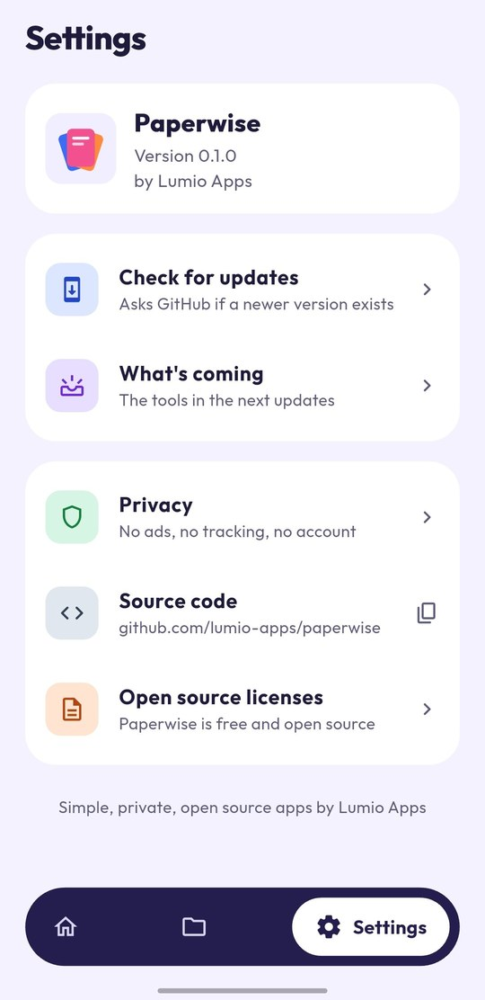

Paperwise
A private PDF toolkit that works fully offline. Read, merge, split, scan and convert PDFs on your phone, and your files never leave it.
Android 7.0 or newer · Free · New in 2026
Screenshots



What you can do
Scan to PDF
Take a photo of a page with the camera, or pick one from the gallery. Drag the four corners onto the page edges and Paperwise straightens it. Pick a look: Original, Magic color, Black & white or Gray. Add more pages, reorder them and make one PDF.
PDF to image
Save the pages of a PDF as JPG or PNG. Choose the quality (standard, high or best) and all pages or only some, like 1-3, 7.
Page tools
Open a PDF as a grid of page previews. Select pages, then move them, rotate them, delete them or extract them into a new PDF. You can also hold a page and drag it to a new place. Your original PDF is never changed.
Read PDFs
Open any PDF inside Paperwise. Zoom, jump to a page, browse page thumbnails, and open locked PDFs with their password. Choose Paperwise when you tap a PDF in your file manager, a chat app or email.
Continue reading
Paperwise remembers the page you stopped on and shows a "Continue reading" card in Your files. Star the PDFs you use most and filter them.
Merge PDF
Join two or more PDFs into one, and drag them into the order you want.
Split PDF
Cut a PDF by page ranges like 1-4, 5-10, or make one file per page. A colored page grid shows which pages go into which file.
Image to PDF
Pick photos from your gallery or take new ones with the camera. Reorder them, then choose page size (A4, Letter or fit to image), orientation and margin.
Your files
Every PDF you make is kept in Paperwise. Open, share, save to your phone, rename or delete it.
Private by design
All PDF work happens on your phone. Files stay in the app's own folder until you share or save them. There are no ads, no accounts and no tracking. The internet is used only when you tap "Check for updates".
What's coming
Paperwise grows one small update at a time, with one group of features in each update.
- v0.1FoundationMerge, split, image to PDF, your files list, update checker (available now)
- v0.2PDF viewerReader with zoom, page jump and thumbnails, continue reading, favorites, open PDFs from other apps (available now)
- v0.3Page toolsReorder, rotate, delete and extract pages on a page grid (available now)
- v0.4Convert and scanPDF to JPG or PNG, scan paper to PDF with the camera, crop and filters (available now)
- v0.5Image privacyRemove photo location and device info, resize, compress, blur or hide parts of a photo
- v0.6CompressLight, balanced and strong PDF compression with a size estimate
- v0.7SecurityPassword lock and unlock, text or image watermark
- v0.8EditAdd text, signature, page numbers, header and footer
- v0.9Markup and searchHighlight, pen and shapes, search words inside a PDF
- v0.10Your wayDark mode, more languages, sort and search files, backup
- v0.11Text recognitionOffline text recognition for scanned pages, searchable PDFs
- v1.0Ready for F-DroidFinal polish, then F-Droid and GitHub Releases. Paperwise will not be on Google Play
Install
- Open the latest release on GitHub.
- Download
Paperwise-vX.Y.Z.apkand open it on your phone. - If asked, allow installing apps from your browser or file manager.
Already installed? Tap Check for updates in Settings.
App details
| Platform | Android 7.0 or newer |
|---|---|
| Current version | 0.4.0 |
| Price | Free, no ads, no in-app purchases |
| Internet | Not needed, only for the optional update check |
| License | MIT |
| Source code | github.com/lumio-apps/paperwise |
| Report a problem | GitHub Issues |